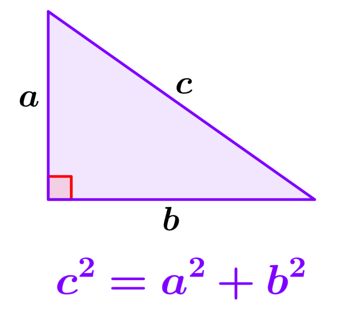

El teorema de Pitágoras es una relación fundamental en geometría euclidiana entre los tres lados de un triángulo rectángulo. Afirma que el área del cuadrado cuyo lado es la hipotenusa (el lado opuesto al ángulo recto) es igual a la suma de las áreas de los cuadrados de los otros dos lados. Este teorema se puede escribir como una ecuación que relaciona las longitudes de los lados a, b y c, a menudo llamada ecuación pitagórica.

TRIANGULO RECTANGULO
Un triángulo rectángulo es un tipo de triángulo con un ángulo recto, es decir un ángulo de 90° En los triángulos rectángulos se cumple el famoso Teorema de Pitágoras: En todo triángulo rectángulo el cuadrado de la hipotenusa es igual a la suma de los cuadrados de los catetos.